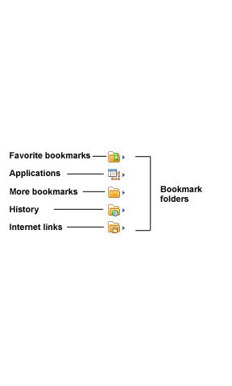
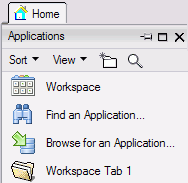
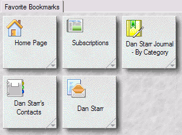

Using bookmarks
Bookmarks are links that point to HCL Notes® applications, views, documents, or Internet elements, such as Web pages and news groups. Bookmark folders organize your bookmarks. They can contain bookmarks or more folders.
Notes Basic client users
You can copy and paste a bookmark as you would text or a document, and you can drag and drop a bookmark to the Bookmark bar, another folder, or from one workspace page to another. The following Bookmark folders appear by default on the Bookmark bar when you first open Notes®:

- Favorite Bookmarks - use to store your favorite or most often-used bookmarks.
- Applications (previously Databases) - Notes® automatically puts copies of all your workspace icons into the Applications folder. Each workspace page (tab) appears as a folder, and the workspace icons appear as bookmarks inside each of those folders. You can open your workspace using the icon in this folder.
- More Bookmarks - contains a Create folder, which includes bookmarks to documents you create frequently, such as memos or calendar entries. It also contains the Startup folder, which contains links to applications that start automatically when you open Notes®. For example, drag your Mail tab to this folder to have Mail open each time you log in or restart Notes®.
- History - similar to the history function in a Web browser. It keeps a chronological listing of bookmarks for all documents, views, applications, and web pages you visit during the course of a day, with the most current item at the top of the list. Dated subfolders within the History folder contain the bookmark lists from the last seven days. The History view can present items by date, by site, or by title.
- Internet Explorer Links - appear only if you have these browsers installed; they contain bookmarks for Internet Explorer locations, or both.
Viewing your bookmarks
You can view your bookmarks in the Bookmark bar, Bookmark list, or in your Workspace. You can arrange bookmarks by dragging-and-dropping them where you want. Bookmarks also have an extensive right-click menu.
Bookmark bar
The Bookmark bar is the list of icons that run down the left edge of the Notes® window. Because it is always visible to you, the Bookmark bar provides easy access to your most often used bookmarks. Each icon on the Bookmark bar can open a bookmark or a list of bookmarks, including your favorite Web browser bookmarks.
View as a list
The Bookmark list displays bookmarks and bookmark folders. To open the list, click a folder icon in the Bookmark bar. To keep the list open, click the pushpin icon. To close the list, click anywhere in the main Notes® window or click the X icon.
The Bookmark list includes Sort and View menus that you can use to customize your bookmark list or display them as a workspace. You can also click the New Folder icon to create a new bookmark folder, and a Search icon you can use to search for a specific bookmark.

View as a workspace
As an alternative to the default vertical list of bookmarks, you can display your bookmarks like the workspace page (that is, icons arranged in a grid and organized by tabs). To display the bookmarks in this way, click a folder in the Bookmark bar and then click at the top of the Bookmark list.

Notes Standard client users
You can copy and paste a bookmark as you would text or a document, and you can drag and drop a bookmark to the Open list, another folder, or from one workspace page to another. The following Bookmark folders appear by default in the Open list when you first open Notes®:
- Favorite Bookmarks - use to store your favorite or most often-used bookmarks.
- Applications (previously Databases) - Notes® automatically puts copies of all your workspace icons into the Applications folder. Each workspace page (tab) appears as a folder, and the workspace icons appear as bookmarks inside each of those folders. You can open your workspace using the icon in this folder.
- More Bookmarks - contains a Create folder, which includes bookmarks to documents you create frequently, such as memos or calendar entries. It also contains the Startup folder, which contains links to applications that start automatically when you open Notes®. For example, drag your Mail tab to this folder to have Mail open each time you log in or restart Notes®.
- History - similar to the history function in a Web browser. It keeps a chronological listing of bookmarks for all documents, views, applications, and web pages you visit during the course of a day, with the most current item at the top of the list. Dated subfolders within the History folder contain the bookmark lists from the last seven days. The History view can present items by date, by site, or by title.
- Internet Explorer Links - appear only if you have these browsers installed; they contain bookmarks for Internet Explorer locations, or both.
Viewing your bookmarks
You can view your bookmarks in the Open list. You can arrange bookmarks by dragging-and-dropping them where you want. Bookmarks also have an extensive right-click menu.
Open list
Click the Open button to view a list of your bookmarks and bookmark folders.
View as workspace
As an alternative to the default vertical list of bookmarks, you can display your bookmarks on the legacy workspace page (that is, icons arranged in a grid and organized by tabs). To display the bookmarks in this way, Click and then chose Workspace from the list. Or if you have docked the Open list, click the Applications folder, and then click the following icon: